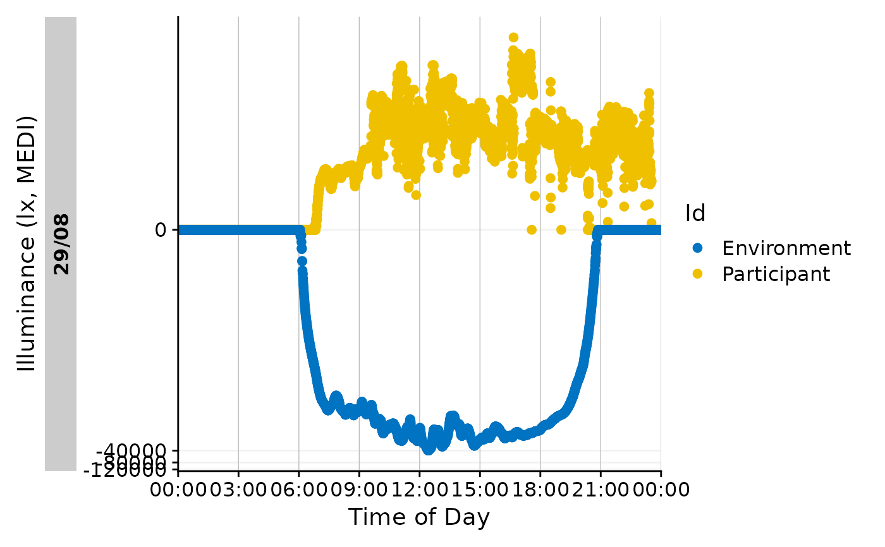
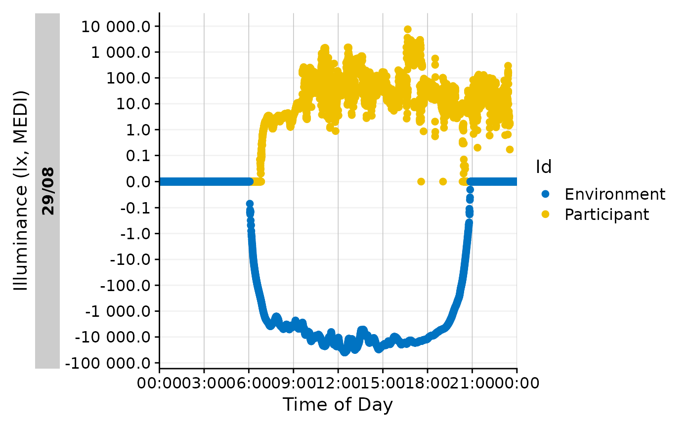

To create a plot with positive and negative (unscaled) values on a log-transformed axis, the values need to be scaled accordingly. R or ggplot2 do not have a built-in function for this, but the following function can be used to create a transformation function for this purpose. The function was coded based on a post on stack overflow. The symlog transformation is the standard transformation used e.g., in gg_day().
Arguments
- base
Base for the logarithmic transformation. The default is 10.
- thr
Threshold after which a logarithmic transformation is applied. If the absolute value is below this
threshold, the value is not transformed. The default is 1.- scale
Scaling factor for logarithmically transformed values above the
threshold. The default is 1.
Value
a transformation function that can be used in ggplot2 or plotly to scale positive and negative values on a log scale.
Details
The symlog transformation can be accessed either via the trans = "symlog" argument in a scaling function, or via trans = symlog_trans(). The latter allows setting the individual arguments.
References
This function`s code is a straight copy from a post on stack overflow. The author of the answer is Julius Vainora, and the author of the question Brian B
Examples
dataset <-
sample.data.environment %>%
filter_Date(end = "2023-08-29") %>%
dplyr::mutate(MEDI = dplyr::case_when(
Id == "Environment" ~ -MEDI,
.default = MEDI))
#basic application where transformation, breaks and labels are set manually
dataset %>%
gg_day(aes_col = Id) +
ggplot2::scale_y_continuous(
trans = "symlog")
#> Scale for y is already present.
#> Adding another scale for y, which will replace the existing scale.

#the same plot, but with breaks and labels set manually
dataset %>%
gg_day(aes_col = Id) +
ggplot2::scale_y_continuous(
trans = "symlog",
breaks = c(-10^(5:0), 0, 10^(0:5)),
labels = function(x) format(x, scientific = FALSE, big.mark = " "))
#> Scale for y is already present.
#> Adding another scale for y, which will replace the existing scale.
#setting individual arguments of the symlog function manually allows
#e.g., to emphasize values smaller than 1
dataset %>%
gg_day(aes_col = Id) +
ggplot2::scale_y_continuous(
trans = symlog_trans(thr = 0.01),
breaks = c(-10^(5:-1), 0, 10^(-1:5)),
labels = function(x) format(x, scientific = FALSE, big.mark = " "))
#> Scale for y is already present.
#> Adding another scale for y, which will replace the existing scale.
